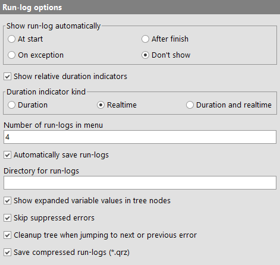
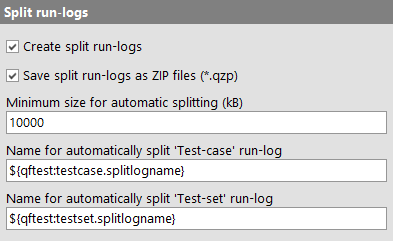
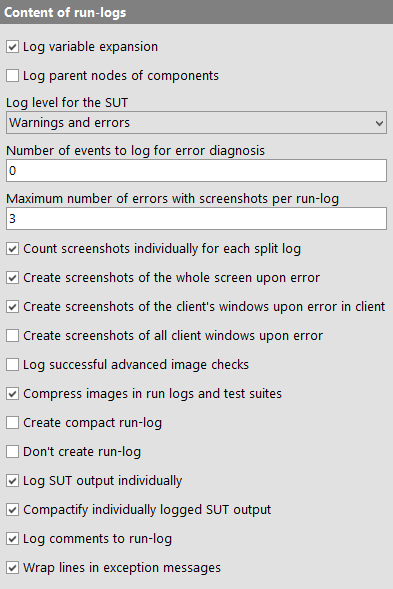
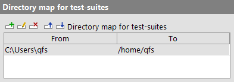

| Version 6.0.3 |
These options let you control which information is collected in a run-log, if and when a run-log is shown and how to locate errors.
|
|  | ||
|
| Figure 37.34: General run-log options | ||
A run-log is created for every execution of a test. A number of recent run-logs are available from the »Run« menu, the most recent run-log can also be opened by pressing [Control-L]. Additionally the run-log can be shown during execution or after an error as follows:
At start
This choice causes QF-Test to open the run-log when it begins executing a test
sequence. The nodes of the log will be added as execution proceeds.
After finish
With this choice the run-log is shown after replay is finished.
On exception
The run-log is shown only if an uncaught exception is thrown.
Don't show
The run-log is not displayed automatically. You have to open
it via the »Run« menu or by pressing
[Control-L].
To analyze the run-time behaviour of a test it is helpful to see at a glance which branches are taking up the most time. To that end, display of duration indicators can be activated via this option, which is also directly accessible via the »View« menu of a run-log.
The length of the bars shown represents the percentage of the time taken for execution of the respective node relative to the time taken by its parent node.
This option determines whether duration indicators show duration, real time spent or both.
NoteThe difference between the values of "Duration" and "Real time spent" are explicit delays introduced in nodes via the 'Delay before/after' attribute or user interrupts.
A limit for the number of menu items for recent run-logs kept in the »Run« menu.
To prevent excessive memory use through run-logs and also to make the most recent run-logs persistent between QF-Test sessions, the recent run-logs kept in the »Run« menu are saved automatically to the user configuration directory or the directory defined in the option Directory for run-logs. The filename for the run-log is based on a timestamp. QF-Test uses file locks to prevent collisions and accidental removal in case of parallel sessions and automatically keeps the user configuration directory clean by removing unreferenced logs, so there should be no reason to disable this feature. Still, you can do so by disabling this option.
By default, run-logs created during interactive use of QF-Test are stored in the user configuration directory. This option can be used to specify a different target directory.
Note This option is interpreted by QF-Test whenever a test is started. At that point, test-suite and global variable bindings are already in place and in contrast to other options it is possible to use QF-Test variable syntax here. This includes special variables like ${env:HOME} to look up an environment variable or even ${qftest:suite.dir} to save the run-log next to the test-suite. If the directory is dynamic, like in the latter case, QF-Test may not be able to clean up old run-logs regularly. Errors in variable expansion are silently ignored and the user configuration directory is used instead.
The nodes in the tree view of a run-log can either be displayed with variables expanded to the value they had at run-time or with the original variables. Both views have their use, so you can toggle between them via this option or more quickly via the menu item »View«-»Show nodes expanded«.
Like the previous one, this option controls the search for errors in a run-log. If activated, warnings, errors or exceptions that have not propagated to the top, are not found. Thus exceptions caught by a 'Try'/'Catch' clause or messages suppressed through the 'Maximum error level' attribute are skipped.
This option is also accessible through the »Edit«-»Skip suppressed errors« menu item.
When repeatedly jumping to errors in a run-log the tree can easily get cluttered with many expanded nodes. If this option is activated, QF-Test will automatically clean up the tree each time you navigate to an error so that only the parents of the error node are expanded.
Note When viewing split run-logs, partial run-logs containing an error will remain in memory as long as their nodes are expanded. Keeping this option activated will ensure that partial run-logs will be released as soon as possible, keeping memory use manageable even viewing the errors of a very large run-logs.
Run-logs can either be saved as plain or as compressed XML files. For large
run-logs without screenshots the compression factor can be as high as 10, so it's
advisable to use compressed logs where possible. The only reason not to use
compression is if you want to transform the XML run-log afterwards. But even then
compressed run-logs are an option because the compression method used is standard
gzip format, so converting to and from compressed run-logs can easily be done
using gzip.
When saving a log-file interactively you can always switch between compressed or
non-compressed format by choosing the appropriate filter or by giving the file the
extension .qrz or .qrl.
In batch mode, the default run-log format is compressed. To create an uncompressed
run-log, simply specify the extension .qrl in the parameter for the
-runlog [<file>] command line argument.
|
|  | ||
|
| Figure 37.35: Options for splitting run-logs | ||
A run-log can be split into several parts by setting the 'Name for separate run-log' attribute of a 'Data driver' or any of the various test nodes. By turning this option off you can temporarily disable support for split run-logs in order to get a normal, single run-log without having to modify any 'Name for separate run-log' attributes.
See subsection 7.1.5 for further information about split run-logs.
Split run-logs can either be saved as a single ZIP file with the extension
.qzp, containing the main run-log and all partial logs together, or
as a normal .qrl or .qrz run-log that is accompanied by
a directory with the same base name and the suffix _logs, e.g. the
file runlog.qrz plus the directory runlog_logs. This
option determines the format in which split run-logs are created in interactive
mode. It has no effect if the option Automatically save run-logs is
turned off.
See subsection 7.1.5 for further information about split run-logs.
Note This option exclusively applies to 'Test-case' and 'Test-set' nodes. At other places run-logs are split only when 'Name for separate run-log' has explicitly been set.
Split run-logs are the only reliable way to prevent running out of memory during very long running tests or when the run-log grows quickly due to screenshots or output from the SUT. They are also more efficient when transforming run-logs into reports. However, explicit setting of 'Name for separate run-log' attributes requires an understanding of the issues involved and either making decisions about where best to split a run-log or tedious typing when trying to split into small pieces.
As a compromise, QF-Test makes a very rough calculation about the size of a run-log during executing, taking screenshots and program output into account. When execution of a 'Test-case' or 'Test-set' has finished and the approximate size of the run-log pertaining to that node is larger than the threshold specified in this option, the run-log is split off and saved automatically. A value of 0 prevents automatic splitting.
See subsection 7.1.5 for further information about split run-logs.
This option specifies the name to use for an external log when it is split off automatically after execution of a 'Test-case' has finished as described in the previous option. Variables can be used as well as the '%...' placeholders documented for the attribute 'Name for separate run-log'.
The special variable ${qftest:testcase.splitlogname} is a good base. It expands to a path name created from the name of the 'Test-case' with possible parent 'Test-set' nodes as directories.
See subsection 7.1.5 for further information about split run-logs.
This option specifies the name to use for an external log when it is split off automatically after execution of a 'Test-set' has finished as described in the option Minimum size for automatic splitting (kB). Variables can be used as well as the '%...' placeholders documented for the attribute 'Name for separate run-log'.
The special variable ${qftest:testset.splitlogname} is a good base. It expands to a path name created from the name of the 'Test-set' with possible parent 'Test-set' nodes as directories.
See subsection 7.1.5 for further information about split run-logs.
|
|  | ||
|
| Figure 37.36: Options determining run-log content | ||
If this option is activated, every variable expansion is logged.
Setting this option will cause all direct and indirect parent nodes to be logged in addition to the target component node for every event, check, etc.
The level for automatically generated messages in the SUT during replay, e.g.
details for component recognition. Only messages with the respective level, i.e.
plain messages, warnings or errors will be logged. This option has no effect on
messages created explicitly via rc.logMessage or
qf.logMessage.
During replay of a test QF-Test logs various events and other things going on behind the scenes. This information is quickly discarded except when an error happens. In that case the most recent events are written to a special run-log node. The information may also be useful to developers but is mostly required for error diagnosis when requesting support from Quality First Software GmbH.
This option determines the number of recent internal events to keep. Setting it to 0 disables the feature altogether. You should not set this value to less than about 400 without a good reason. Because the information is logged only for errors, the cost for gathering it is minimal.
The maximum number of screenshots that QF-Test takes and stores in the run-log during a test-run on situations of exception or errors. Setting this value to 0 disables taking screenshots entirely, a negative value means unlimited screenshots.
If this option is set, each partial log of a split run-log may contain the maximum number of screenshots defined above without affecting the count for the main run-log. Otherwise the limit applies for the sum of all parts belonging to the same main run-log.
See subsection 7.1.5 for further information about split run-logs.
Activating this option causes QF-Test to take an image of the whole screen and save it in the run-log when a screenshot is triggered by an exception or error.
If multiple monitors are connected when taking screenshots it may not be desirable to take screenshots of all screens, especially on personal workstations where this might expose private or confidential information.
If this option is active (the default), QF-Test will try to determine the screens on which an SUT window or the QF-Test workbench are showing and exclude the rest.
Activating this option causes QF-Test to record images of all windows and dialogs of the SUT and store them in the run-log when screenshots are triggered due to exceptions or errors coming from that SUT. In many cases this will work even for windows that are covered by other windows or in cases where a full screenshot is not possible, for example when a screen is locked.
If this option is active QF-Test will log images of all windows of all connected SUTs for any exception or error, regardless of where the exception or error is coming from. This option also affects which screens are considered relevant, depending on where SUT windows are showing.
If this option is active, screenshots will also be saved when warnings are logged in the run log. Otherwise this is done for errors and exceptions only.
If this option is activated, QF-Test will store the expected and actual images as well as the transformed images for successful advanced image checks in the run-log. Otherwise these details are kept for failed image checks only.
Activating this option can raise the size of the run-log drastically so be sure to use it in combination with compact run-logs and/or split run-logs.
If this option is activated, QF-Test will store new images in test-suites and run-logs losslessly compressed.
This option can reduce the memory consumption of protocols and test suites on disk and in memory significantly. On the other hand, compression and decompression requires some CPU time, so the option can be deactivated for very time-critical test executions.
Activating this option causes QF-Test to discard every node from a run-log that is neither relevant for error diagnosis, nor for the XML/HTML report. After an error or exception, as well as at the end of a test-run, the 100 most recent nodes are not discarded, so the most relevant information should remain available.
Even large tests should not cause memory issues, provided the option Create split run-logs is turned on and used as described in Split run-logs. But if you do run out of memory, activating this option can be useful.
This option is used only when QF-Test is run in interactive
mode. It is ignored in batch mode (see section 1.7) to avoid accidental loss of
information. To create a compact run-log in batch mode, use
the -compact command line argument.
For very-long-running tests or demos that are run in an endless loop, memory consumption of the run-log is an issue, but split run-logs are an ideal solution. Before split run-logs were available, turning run-logs off completely via this option was sometimes the only way to get long-running tests to work. Now this option is only retained for backwards compatibility.
Note In batch mode this option is ignored. To suppress the
run-log, use the argument -nolog.
If set, any text that an SUT client prints to its stdout or stderr stream is also logged in the run-log. For each interaction with the SUT QF-Test collects text printed before the event and after the event during synchronization. This makes it possible to associate output like an exception stacktrace that is triggered by an event with the event itself, something that is impossible if all output is kept in a single piece.
Output from an SUT client tends to accumulate and can consume a lot of memory. If this option is activated, individually logged SUT output for events that are no longer of interest can be removed along with the events in compact run-logs. Please see the option Create compact run-log for further information about compact run-logs.
If this option is activated, 'Component' steps are added to the run-log.
If activated, display of exceptions messages in the run-log or an error dialog are displayed using word-wrap to break long lines.
|
|  | ||
|
| Figure 37.37: Options for mapping between directories with test-suites | ||
When analyzing a run-log it is often necessary to quickly switch between the run-log and the respective test-suite. However, when running automated tests on different systems like Windows and Linux, the directories from which test-suites are loaded during the test vary and there is no automatic way to map between different directory layouts.
With this option you can assist QF-Test in locating test-suites. The 'From' column is a glob pattern that must match from the beginning of the path of the test-suite stored in the run-log to the end of some directory in that path. The 'To' column is the respective replacement for the matching part and can also contain a glob pattern. When searching for the test-suite, QF-Test processes this list top to bottom, performing the replacement for every match found and the first match leading to an actual test-suite is used.
Note A glob patterns is a simpler form of a regular expression often used by development tools: An '*' stands for any number of characters up to the next file separator while '**' means 0 or more characters of any kind, including '/'. Some examples:
**/test-suites
test-suites at any depth.T:/test/sut_*
sut_ in the T:/test
directory.
| Last update: 9/6/2022 Copyright © 1999-2022 Quality First Software GmbH |